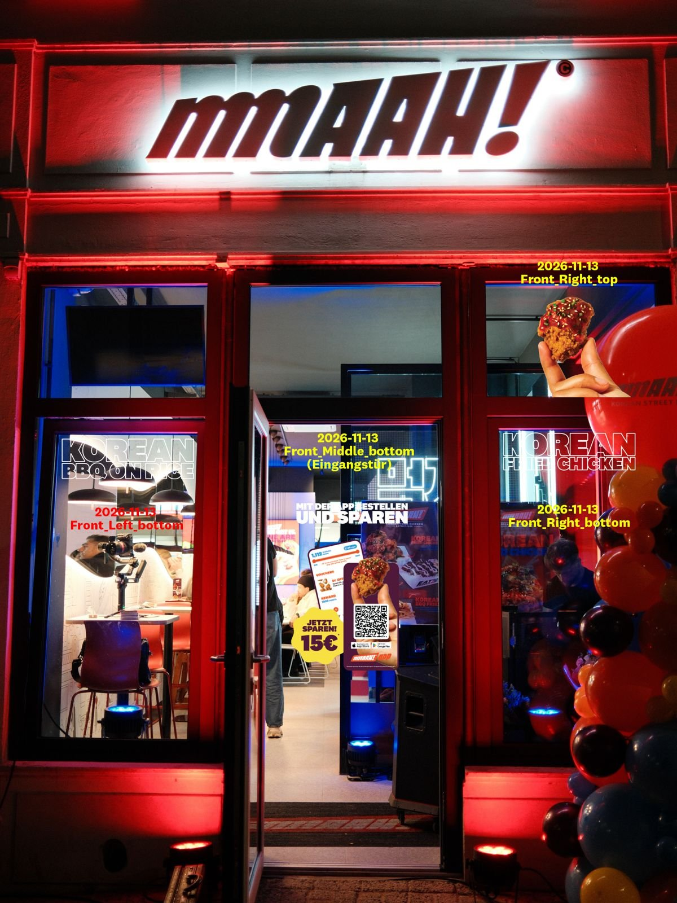

Stand 26.11.2026 für alle Varianten: Fensterschrift eng gesetzt mit kurzem Q, Unterzeile so breit wie die Schrift, Tür mit großem Wappen mittig und kleinerem Logo darunter, Variante 4 ohne Zeichnung. Dazu aus der Präsentation vom 25.11.: Werbeanlage weiß mit schwarzer Kontur, Tür mit Wappen EAT KOREAN SINCE 2012 먹자 und Logo mit KOREAN STREET FOOD, Oberlichter frei mit Abholbildschirm links, Seitenfenster 잇코리안 als blaues Neon, Fensterschrift mit dicker Outline wie Hohenzollernstraße, Markise mit bedrucktem Volant, Innenraum wie Hohenzollernstraße.
Folien flach (Druckmaß, 1 px = 1 mm)
Vorlage: Fotos vom 13.11.2026


Learnings aus Hamburg, hier umgesetzt
- Durchsicht bleibt: nur weiße Outlines, Hauptbotschaft zwischen 1,25 und 2,05 m, darunter frei oder nur die feine Seoul Linie.
- Wie aus einem Guss: gleiche Schrift (National 2 Black), gleiche Höhen auf allen Scheiben, die Seoul Linie läuft über beide Fenster durch.
- Food nur echt: die freigestellten Chicken Bites mit Sesam und das BBQ Tray in der Mmaah Schale, keine Hand, keine roten Pommes Schachteln.
- Logo: nur mmaah! mit Outline auf der Tür, die Werbeanlage oben als dunkelrote Einzelbuchstaben mit weißem Halo.
- Offen vor Druck: Aufmaß vor Ort, echter QR Code der App, 15 € Aktion und KOREAN BBQ ON RICE mit der Karte abgleichen.